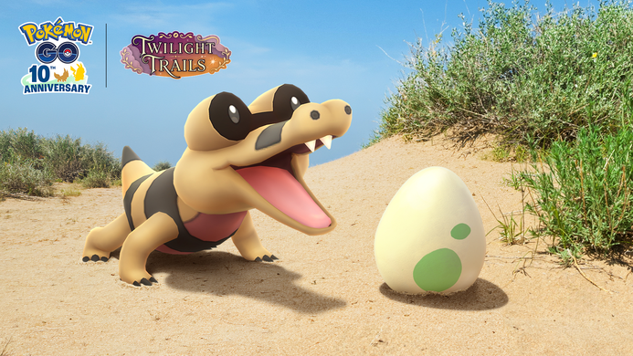

포켓몬 GO 깜눈크 부화데이 10월 17일 11시부터 17시, 알 부화 거리 절반 보너스 챙기는 법
부화장치에 알 하나 넣어 놓고 이걸 언제 다 걷나 한숨 쉬어 본 적, 다들 있으시죠. 그런 분들한테 반가운 날이 잡혔는데요, 깜눈크 부화데이는 10월 17일 토요일 오전 11시부터 오후 5시까지 열릴 예정이에요. 오늘이 10월 9일이니까 딱 8일 남았네요.
공식 안내에서 알 부화 거리가 절반이라는 문구가 눈에 확 들어오더라고요 ㅎㅎ 그래서 오늘은 이날 부화장치를 어떻게 채우고 알 칸을 어떻게 비워 둘지, 부화 운영 쪽으로 풀어 볼게요.
깜눈크 부화데이는 언제고 뭐가 달라지나요?
포켓몬 GO 깜눈크 부화데이는 한국 시간으로 10월 17일 토요일 오전 11시부터 오후 5시까지, 6시간 동안 열릴 예정이고 깜눈크가 2km 알에서 평소보다 더 자주 부화해요.

알 앞에서 입을 쩍 벌린 깜눈크예요.
이미지 출처: 포켓몬 GO 공식 뉴스 · 네이버 본문엔 받아서 재업로드 권장
| 항목 | 내용 |
|---|---|
| 일시 | 10월 17일(토) 11:00~17:00 (한국 시간) |
| 주인공 | 깜눈크 (2km 알에서 더 자주 부화) |
| 시간제한 리서치 | 무료 + 유료 티켓 (둘 다 17:00 전 완료·수령) |
이날 붙는 보너스는 네 가지인데요, 별표(*) 두 개는 다른 이벤트 보너스와 겹치지 않아요.
- 부화 시 포켓몬 사탕 2배*
- 알 부화 거리 1/2*
- 색이 다른 깜눈크가 부화할 확률 증가
- 포켓스톱을 돌렸을 때 2km 알을 받을 확률 증가
알 부화 거리가 절반이면 몇 km를 걸어야 하나요?
부화 거리가 절반이 되니까 계산하면 2km 알은 1km, 5km 알은 2.5km만 걸어도 부화해요. 알 종류별로 걷는 거리를 표로 나눠 볼게요.
| 알 종류 | 평소 | 이벤트 1/2 | 유료 티켓 1/4 |
|---|---|---|---|
| 2km | 2km | 1km | 0.5km |
| 5km | 5km | 2.5km | 1.25km |
| 10km | 10km | 5km | 2.5km |
| 12km | 12km | 6km | 3km |
표의 km는 알 거리를 1/2, 1/4 기준으로 정리한 값이고, 1/4은 상점 티켓 안내 기준이에요. 재밌는 건 깜눈크 얘기인데요, 평소엔 12km 알에 있는 걸로 알려져 있는 깜눈크가 이날은 2km 알에서 더 자주 나오니 걷는 부담이 확 줄어요.
부화장치는 몇 개로 어떻게 채우면 되나요?
부화장치 하나에는 알이 하나만 들어가니까, 이날 한 번에 돌릴 수 있는 알 수는 가진 부화장치 개수로 정해져요.
- 무한 부화장치: 기본으로 있고 사용 횟수 제한이 없어요
- 무료 시간제한 리서치 보상: 부화장치 1개
- 유료 티켓 보상: 슈퍼 부화장치 2개
부화장치를 추가로 사면 알을 동시에 부화시킬 수 있다고 하니, 같은 거리를 걸어도 한 번에 깨지는 알이 늘어나는 셈이에요. 2km 알로 장치를 꽉 채워 두면 1km 걸을 때마다 장치에 든 알이 줄줄이 부화하는 계산이죠. 그래서 저는 11시 전에 묵은 알은 최대한 부화시켜 일반 칸을 비워 두고(알은 버릴 수 없어요), 11~17시에 포켓스톱에서 새로 받은 2km 알을 부화장치에 넣는 걸 기준으로 잡으려고요.
장치마다 알 하나씩이라 개수가 곧 속도예요.
알 보관함이랑 포켓스톱 회전은 어떻게 챙기나요?
이날은 포켓스톱을 돌릴 때 2km 알이 나올 확률이 올라가니까, 알 보관함에 빈칸을 미리 만들어 두는 게 제일 중요해요.
- 알은 최대 12개까지 가질 수 있지만, 포켓스톱 알은 일반 9칸까지만 들어가고 나머지 3칸은 모험 동기화·로켓단 알 전용인 걸로 알려져 있어요. 일반 칸이 꽉 차 있으면 새 알이 들어올 자리가 없어요.
- 11시 전에 묵은 알은 최대한 부화시켜 보관함 자리를 확보해 두세요(알은 버릴 수 없어요).
- 걷는 길에 있는 포켓스톱은 빠짐없이 돌려서, 이벤트 중에 새로 받은 2km 알을 부화장치에 채워 가요.
- 바로 부화 알은 자동으로 놓이는 전용 장치를 써서 도구 가방 부화장치는 쓰지 않고, 정확히 1km만 걸으면 부화해요. 보관 칸도 차지하지 않지만 이벤트 보너스는 적용되지 않아요.
이벤트 시간 안에 포켓스톱에서 받은 2km 알이 계속 쌓이면 부화장치도 계속 돌려야 하니까, 알 받기와 부화장치 채우기를 한 세트로 움직이는 편이 효율적입니다.
보관 칸 숫자를 먼저 보고 비울지 정해요.
유료 시간제한 리서치, 사야 하나요?
무료 리서치만으로도 부화장치 1개와 경험치를 받을 수 있고, 유료 티켓은 1.99달러 상당에 거리 보너스 1/4(상점 티켓 안내 기준)과 슈퍼 부화장치 2개를 주는 구성이에요.
| 구분 | 무료 리서치 | 유료 티켓 |
|---|---|---|
| 가격 | 무료 | 1.99달러 상당 (상점 표시 기준, 지역별로 다를 수 있음) |
| 거리 보너스 | 1/2 (이벤트 공통) | 1/4 (상점 티켓 안내 기준) |
| 부화장치 | 부화장치 1개 | 슈퍼 부화장치 2개 |
| 그 밖의 보상 | 경험치 | 별의조각 1개 + 추가 보상 |
| 마감 | 17:00 전 완료·수령 | 17:00 전 완료·수령 |
유료 티켓의 과제는 별의모래를 모으고 1km를 걷는 거라서 이벤트 내내 걷는 분이라면 자연스럽게 채워질 거예요. 무료 쪽은 알 1개를 부화하면 경험치 5,000을 받는 걸로 알려졌고요. 과제만 끝내서는 안 되고 보상 수령까지 17시 전에 마쳐야 해서, 저는 마감 30분 전엔 꼭 열어 보려고 해요. 사는 게 좋은 선택인지는 단정하기 어렵고, 장치가 모자라거나 슈퍼 부화장치가 필요한 분만 따져 보시면 될 것 같아요. 색이 다른 깜눈크는 확률이 올라간다는 것까지만 나오고 수치는 비공개예요.
확인 위치: 공식 공지·인게임 시간제한 리서치와 부화장치 화면 · 확인되면 아래에 채워주세요.
| 항목 | 값(확인 후 입력) |
|---|---|
| 이벤트 전에 받은 알·이미 넣어 둔 알에 거리 1/2 적용 여부 | — |
| 일반·슈퍼 부화장치 효율 수치 | — |
| 무료 리서치 과제 세부 조건(공식 미기재) | — |
| 유료 티켓 원화 가격 | — |
깜눈크가 부화하면 사탕이랑 진화는 어떻게 되나요?
깜눈크는 사탕 25개로 악비르, 악비르는 사탕 100개로 악비아르가 되고, 이날은 부화할 때 받는 사탕이 2배라서 진화 사탕이 훨씬 빨리 쌓여요.
| 단계 | 이름 | 영문명 | 진화에 필요한 사탕 |
|---|---|---|---|
| 1단계 | 깜눈크 | Sandile | 25개 |
| 2단계 | 악비르 | Krokorok | 100개 |
| 3단계 | 악비아르 | Krookodile | 마지막 단계 |
악비아르까지 가려면 사탕이 합쳐서 125개 드는 계산인데요, 진화에 필요하다고 안내된 건 사탕뿐이라 사탕 125개부터 모아 두세요. 부화 직후 CP는 546에서 592 사이, 알에서 나온 개체는 레벨 20으로 알려졌어요. 깜눈크는 색이 다른 모습도 이미 나와 있고 악비르와 악비아르도 색이 다른 모습이 확인되니, 부화 결과 화면에서 색부터 슬쩍 보시길 권해요~
자주 묻는 질문
Q. 이미 부화장치에 넣어 둔 알도 거리가 절반으로 줄어드나요?
이벤트 전에 받은 2km 알은 거리 1/2 적용 여부도 공식 미기재이고, 깜눈크 출현 증가는 이벤트 중에 받은 알 기준으로 알려져 있어요. 그래서 11시 이후 포켓스톱에서 새로 받은 알을 부화장치에 넣는 쪽으로 계획하는 편이 안전합니다.
Q. GO패스나 다른 이벤트 보너스랑 같이 받을 수 있나요?
사탕 2배와 거리 1/2은 다른 포켓몬 GO 이벤트 보너스나 GO패스 보너스와 중첩되지 않아요. 같은 종류 보너스가 따로 있어도 겹쳐서 더 줄거나 더 늘지 않는다고 보시면 돼요.
Q. 시간은 한국 시간 기준인가요?
이벤트는 각 지역의 현지 시간 11시부터 17시까지라서 한국에서는 한국 시간 오전 11시부터 오후 5시예요. 리서치 마감도 같은 17시입니다.
Q. 이벤트가 바뀌거나 중단될 수도 있나요?
네, 공식 공지상 이벤트 내용이 바뀌거나 중단될 수 있습니다. 걸어 다니며 화면만 보지 말고 안전과 지역 방침을 지키면서 즐기라는 당부도 함께 있어요.
깜눈크 부화데이 정리
챙길 건 세 가지예요. 11시 전에 묵은 알 부화시켜 칸 비우기, 11~17시에 새로 받은 2km 알 채우기, 알 보관함에 빈칸 만들어 두기, 17시 전에 리서치 보상까지 받아 두기면 돼요. 이날 부화 결과가 나오면 이어서 정리해 볼 테니, 다들 알 많이 깨시길 바랄게요~
✔ 포켓몬 GO 같이 보기 좋은 내용
· 포켓몬고 한글날 이벤트 정리 10월 9일 20시 종료, 출현 11종 루어모듈 향로 컬렉션 챌린지 안농 H
· 포켓몬고 GPS 안 잡힐때 해결방법 위치를 감지하지 못했습니다 오류, 안드로이드 아이폰 순서대로 체크
· 포켓몬고 과사삭벌레 진화 애프룡 단지래플 과미르 사과 사탕 총정리, 과미드라 조건까지
참고한 곳 (2026.10.09 기준)
· 포켓몬 GO 공식 뉴스 — 깜눈크 부화데이
· Pokémon GO 공식 뉴스(영문)
· 나이언틱 도움말 — 부화장치
· 나이언틱 도움말 — 바로 부화 알
· (2차 자료) Pokémon GO Hub DB — 깜눈크 진화 사탕·부화 CP